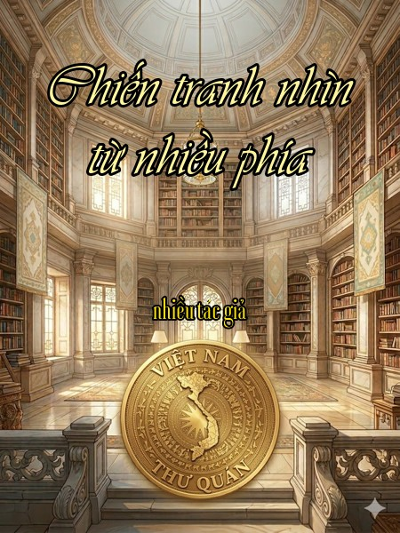

« Back
Chiến Tranh Nhìn Từ Nhiều Phía
By Nhiều Tác Giả

Những Ngày Tháng Năm Năm 2004 Của Tôi
Văn Chương Về Chiến Tranh Việt Nam Và Nhu Cầu Sáng Tạo Bút Pháp Mới
Giữa Những Lằn Đạn, Giữa Những Quê Hương
Người Đi, Thơ Còn Lại
Phỏng Vấn Nguyễn Thị Hoàng Bắc
Tôi Không Nói Tiếng Ma-Rốc [Khi Trả Lời Phỏng Vấn Của Trần Văn Thuỷ]
Gạo Đắng
Quên Và Nhớ: Người Việt Trên Thế Giới, Chúng Ta Là Ai?
Ai Chiến Thắng?
Về Việc Tra Tấn Kẻ Khác
Ðọc Sách: Death Of A Generation: JFK Đảo Chính Ngô Ðình Diệm Để Rút Quân
Chiến Tranh Và Bệnh Vĩ Cuồng
Triển Lãm At War
Vụ Kiện William Joiner Center: Ai Có Quyền Viết Lịch Sử Một Cộng Đồng?
Cựu Chiến Binh, Nhà Thơ
Vụ Trại Người Việt Tại Pháp Và Vụ William Joiner Center Tại Mỹ
Thư Gởi Nhà Văn Cao Xuân-Huy Nhân Đọc Lại Tháng Ba Gãy Súng
Lớn Lên Trong Hoà Bình
Tản Mạn Về Vụ Kiện Chất Độc Da Cam Và Nhóm Vietunity
Hòa Hay Chiến, Và Phản Chiến
Chiến Tranh, Mắt Nhắm Mắt Mở
Trận Valmy Của Các Dân Tộc Thuộc Địa
Sự Thật Tương Đối Của Lịch Sử - Đọc “Trăng Huyết” Của Anthony Grey Và Nguyễn Ước
Chung Một Chiến Hào
Vẫn Còn Đó Vết Thương Cũ
Sống Và Chết Sau Chiến Tranh Việt Nam